For Web Development, we will be using various tools such as Markdown and HTML, but in my case, I have chosen to use
HTML, CSS, and Javascript(JS for short), using Notepad++ to edit and create my website. Brackets is also another viable option if you
are considering to try HTML yourself. Aside from these scripting languages, I will also be using Github, a source control tool to
publish and show this website publicly.
HTML, or Hyper Text Markup Language is used to generally configure and control the website's look and functionality, from hyperlinks to the text and content
listed on the website. HTML alone is sufficient to create a website, but it is lacking in several areas that CSS and Javascript will be able to help fill and
assist in covering up for those weaknesses.
This section will cover the simple basics of HTML, as well as include some examples of how I have used it to create this very website you are viewing now.
I picked up the basics of HTML from this video listed below:
First of all, HTML functions primarily due to its structure, but it first needs to be initialised using a statement at the start of a text file using the following line.
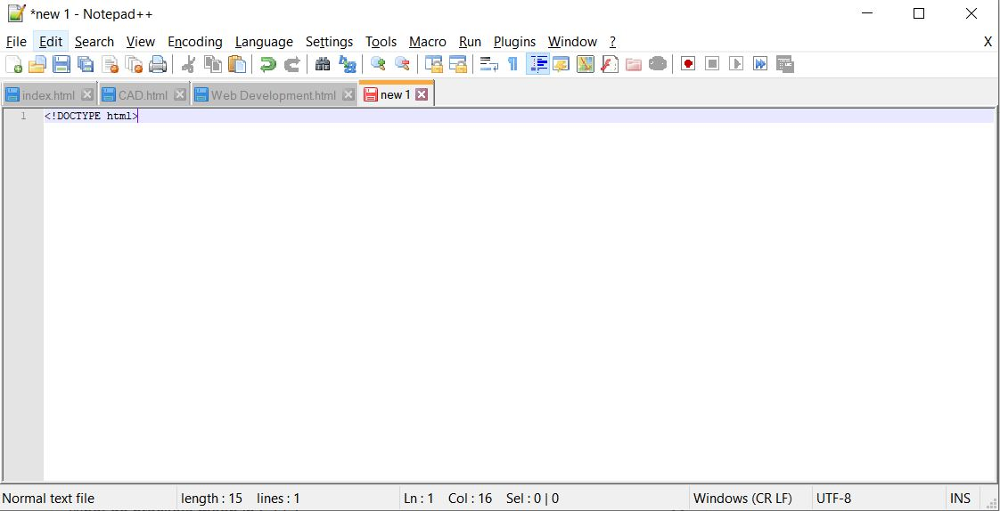
The first line is used to help identify what kind of file this is when it is opened in the browser, using !DOCTYPE to show that the tag, which is what text in angled brackets is referred to in HTML,
is there to identify what kind of file it is opening, followed by "html" to show that is is a HTML file. From here, we need to lay out a HTML skeleton, as shown below.
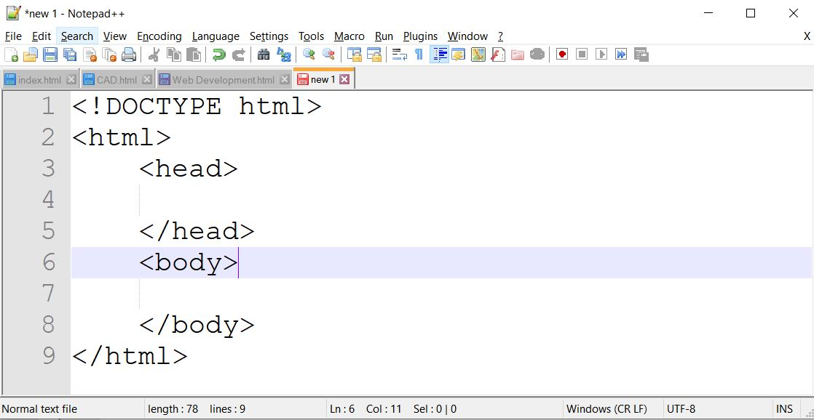
This will allow us to key in text and edit the look of a webpage. The head and body section each affect different things, so let's focus on what we can do in the head section first. We can add a title tag.
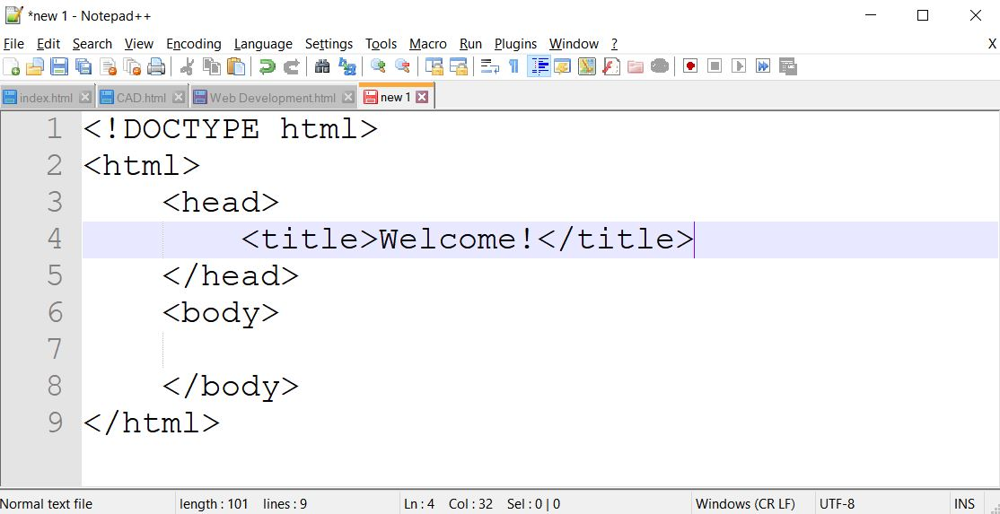
Now that we've keyed in our title, if we save it as a HTML, we should be presented with a blank page with it's title being what we keyed in between the title tags.
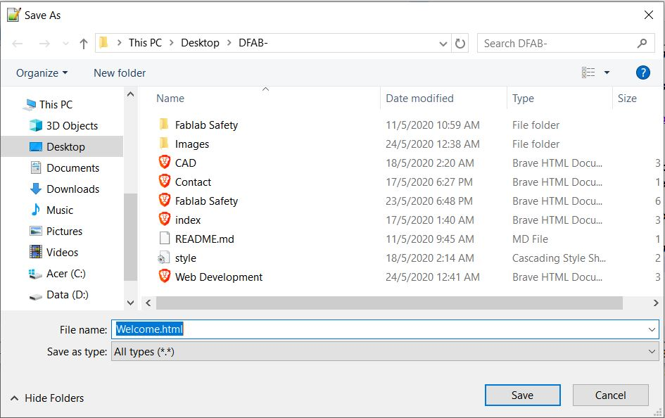
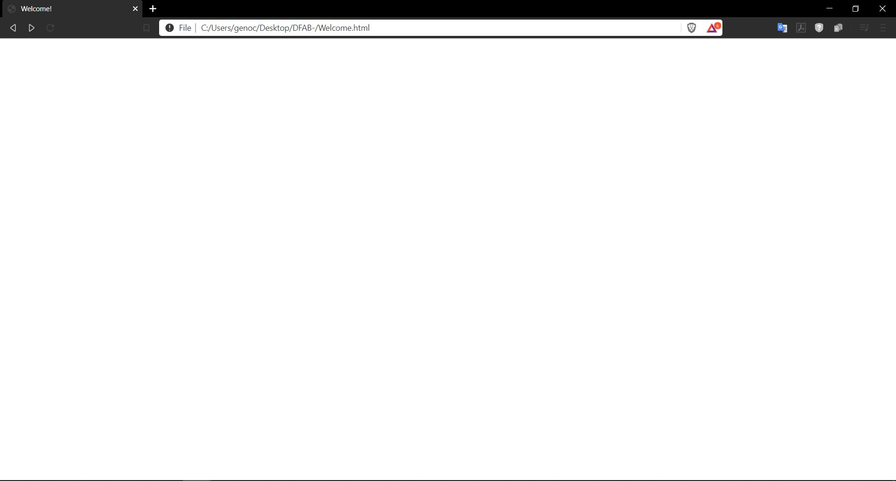
That's about it for the head section. Now, as for the body, most of the content in the page will be made and scripted in this section. There are many tags that can be used here, but I will elaborate on the
ones I have used the most in the creation of this website. First of all, the header tag.
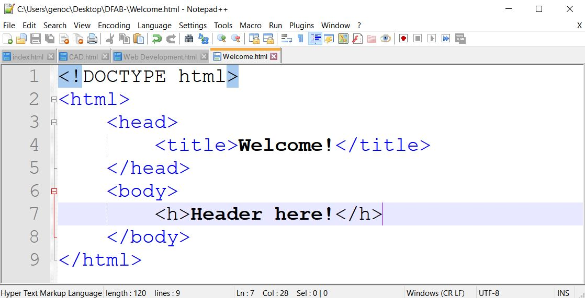
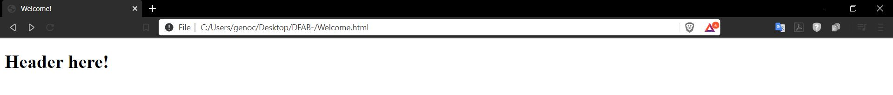
This is the header tag, which essentially as the name implies, creates a header. This can be made to range from h1 to h6, the size of each subsequent header getting smaller as the number of headers increase.
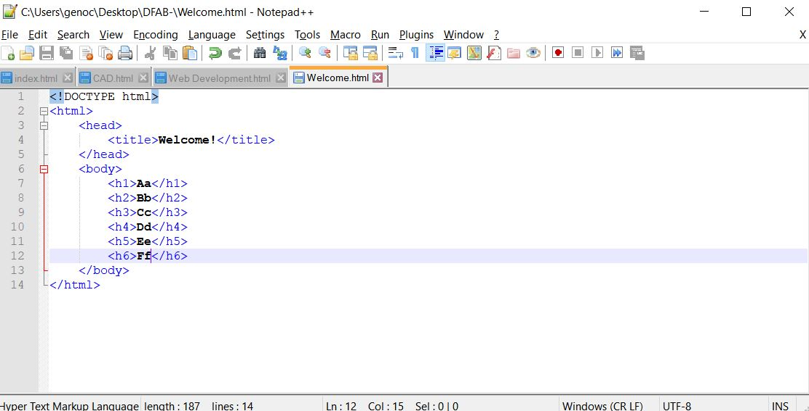
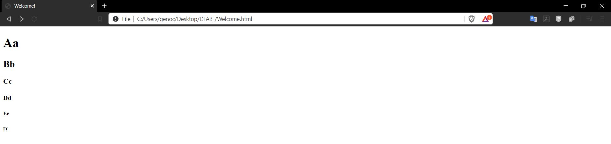
Aside from headers, you can do paragraph tags, and accentuate them with line breaks, which use /br, or hr/. Both of these are self opening and closing tags, which mean you only need one of them.
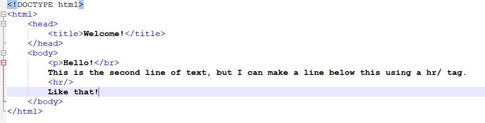
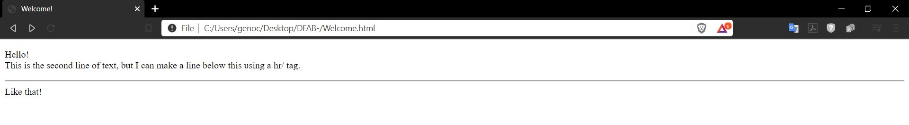
However, if you feel that these are not enough for you, you can use the following PDF to help guide you through the use of other tags as a Cheatsheet to help.
Below are screenshots and examples of how I've used various tags to create my various webpages, and will most likely(maybe not) be updated with as many screenshots of all my webpages as possible.
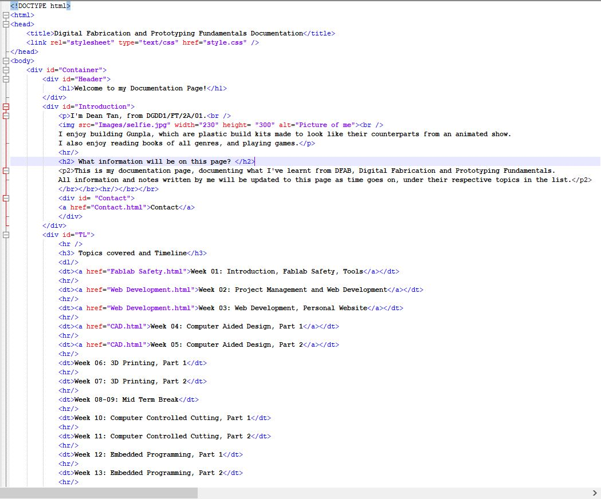
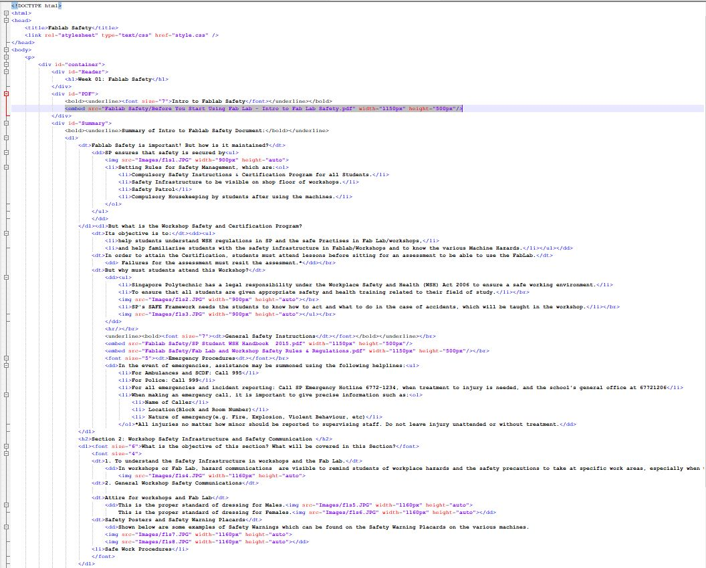
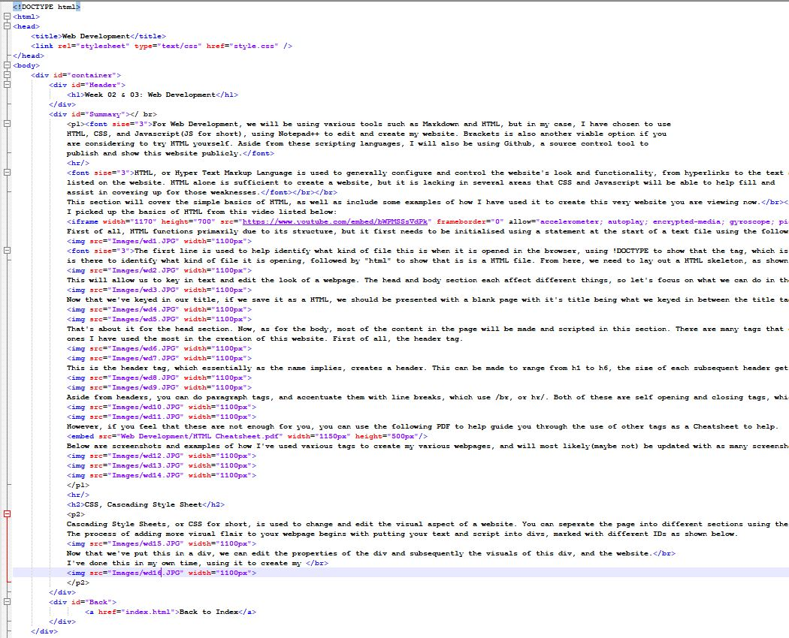
CSS, Cascading Style Sheet
Cascading Style Sheets, or CSS for short, is used to change and edit the visual aspect of a website. You can seperate the page into different sections using the div tag.
The process of adding more visual flair to your webpage begins with putting your text and script into divs, marked with different IDs as shown below.
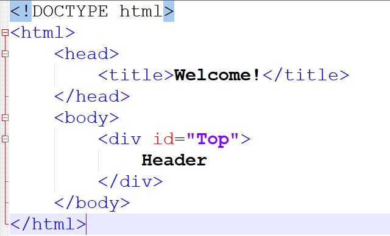
Now that we've put this in a div, we can edit the properties of the div and subsequently the visuals of this div, and the website.
I've done this in my own time, using it to create my own website.
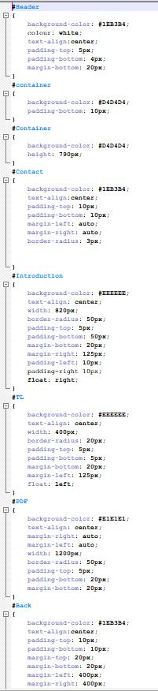
With CSS, you can change the spacing and positioning of different divs, the colour, the text margins, and other visual aspects, such as the colour or font size. This was mostly learned from this video.
Javascript
Javascript is used to essentially add functionality to various parts of the website, and a lot of it can be explained in this video: